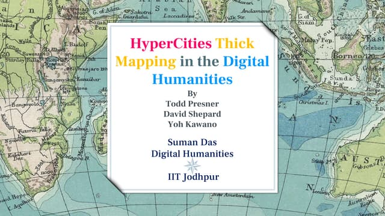
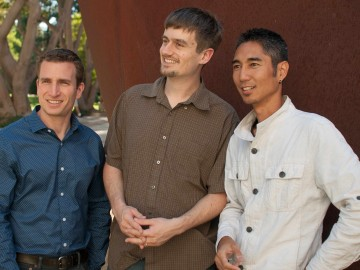

HyperCities is an innovative platform that bridges the past and present through interactive digital mapping. Explore historical and contemporary urban landscapes, uncover rich stories, and engage with dynamic data visualizations. Designed for educators, researchers, and curious minds, HyperCities empowers users to connect with cities' cultural and historical layers in a seamless, immersive experience. Dive into the intersection of technology, history, and geography.
What you can do Here
Find and search what you are interested in
Share and discuss your ideas with peers.
Sourcrowding in the project
Project


Aim
The aim of HyperCities is to foster a deeper understanding of urban spaces by blending historical narratives with modern technology. Through interactive mapping and dynamic visualizations, the project seeks to bridge the gap between past and present, encouraging users to explore, analyze, and engage with the cultural, social, and historical layers of cities. HyperCities aims to inspire curiosity, promote education, and provide a platform for collaborative research and storytelling.
HyperCities History
2004
2005
2009
2011
2013
Team
Todd Presner
Professor of Germanic Languages and Comparative Literature at the University of California Los Angeles
He is the Chair of UCLA’s Digital Humanities Program and also the Sady and Ludwig Kahn Director of the UCLA Center for Jewish Studies. With Anne Burdick, Johanna Drucker, Peter Lunenfeld, and Jeffrey Schnapp, he is the co-author of Digital_Humanities (MIT Press, 2012). His collaborative research and teaching has been supported by the MacArthur Foundation/HASTAC, NEH, Mellon, and Google.
David Shepard
(PhD, English, UCLA) is the Lead Academic Developer at the UCLA Center for Digital Humanities and a former Visiting Assistant Professor of Digital Humanities at the University of California, Los Angeles.
In 2010, he and Presner received one of the inaugural Google Digital Humanities Awards for HyperCities GeoScribe, a tool for literary mapping. His current research examines event detection and tracking in social media, focusing on users’ behavior during crises.
Yoh Kawano
is Campus GIS Coordinator at the Institute for Digital Research and Education and lecturer in the School of Public Affairs at the University of California, Los Angeles.
Following the Great Tohoku Earthquake in Japan, Yoh has been busy researching the potential that the social web can have in post-disaster relief. In the inaugural TEDxUCLA event in 2011, he spoke of ways that locational technologies can provide immediate and real-time opportunities for crisis management.
Philip J. Ethington
is Professor of History, Political Science, and Spatial Science in the Dornsife College of Letters, Arts and Sciences, and Faculty Master of New Residential College, at the University of Southern California.
He has recently finished an online+print global history of Los Angeles, Ghost Metropolis: Los Angeles Since 13,000 (under consideration by UC Press). He is co-PI on both the HyperCities and Scalar open-source authoring platforms.

Mike Blockstein
is a visual artist and educator and the Principal of Public Matters, a social enterprise that develops and implements long-term neighborhood-based media, education and civic engagement projects.
Mike has created and led projects nationally, working with youth, community leaders and organizations to reflect on, understand and shape their physical, social and political geographies, including Market Makeovers, work on healthy food access, and PDub Productions in Los Angeles’ Historic Filipinotown.
Reanne Estrada
is the Creative Director of Public Matters.
A visual artist whose work addresses issues of identity, she combines her background in visual arts, including graphic design and media production, with social marketing and education to reach and engage focus populations, with an emphasis on resource-poor, low-income communities of color. She has produced media that have shown in museums, galleries and film festivals nationwide.